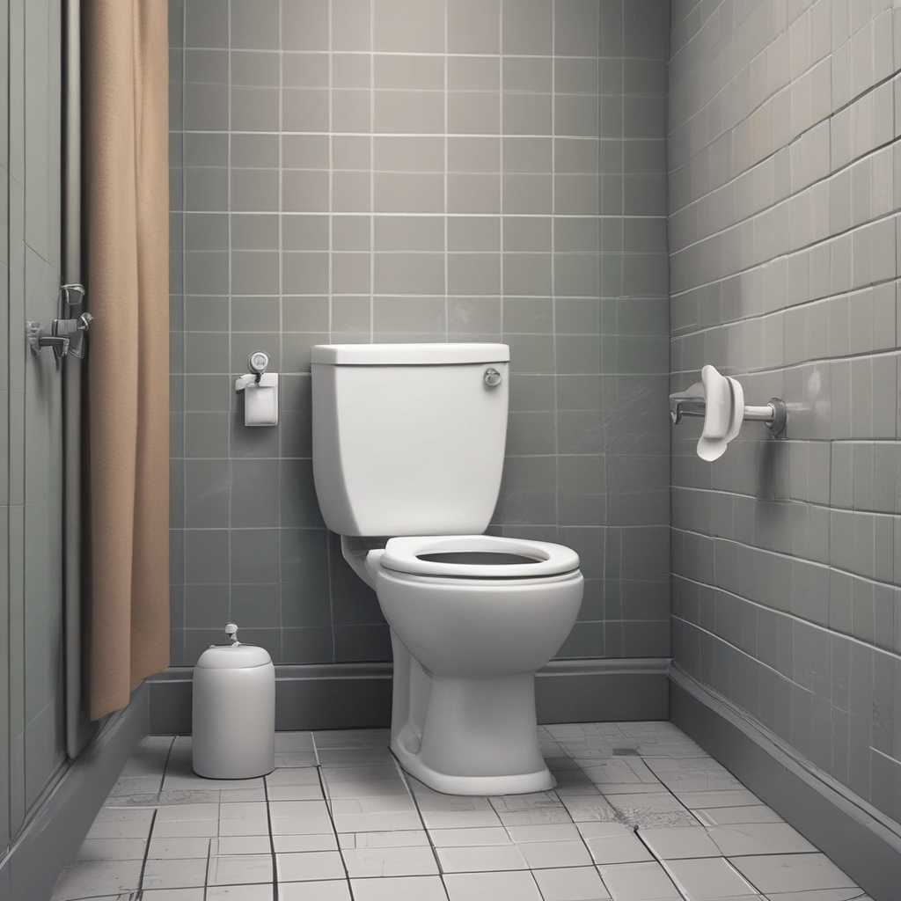

{% extends 'base.html' %}

{% block content %}
    <body>
        <header>
            <code>
                <section>
                    <h1>All Tasks marked for deletion were flushed earlier!</h1>
                                   
                </section>
            </code>
        </header>
    </body>
{% endblock %}